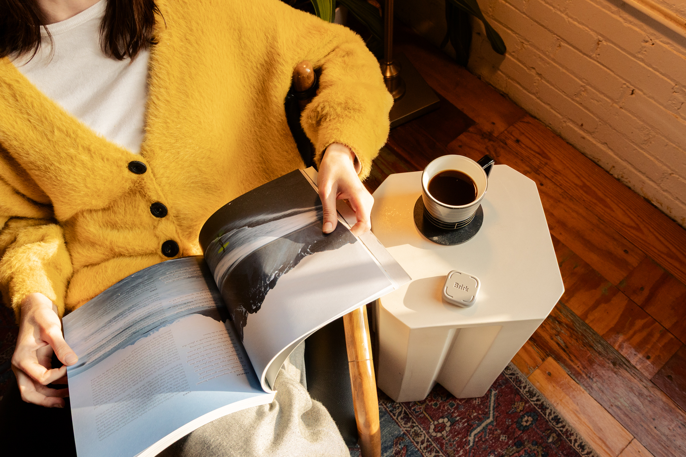
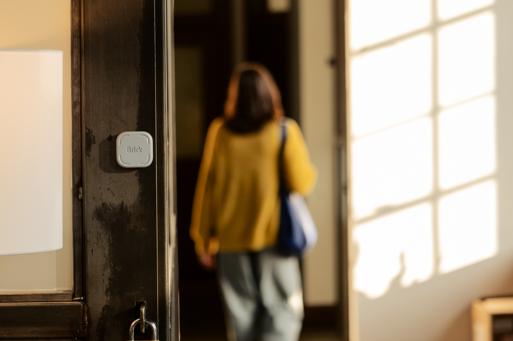
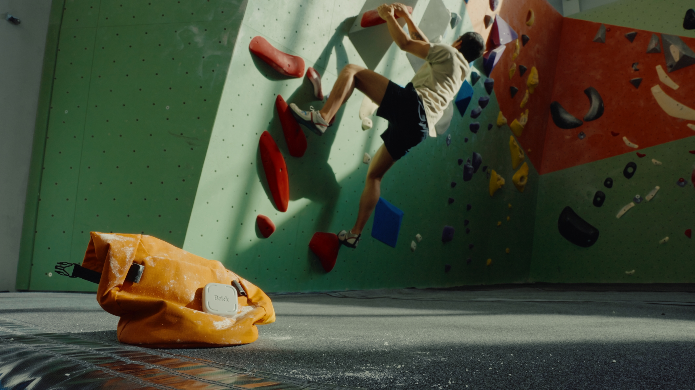
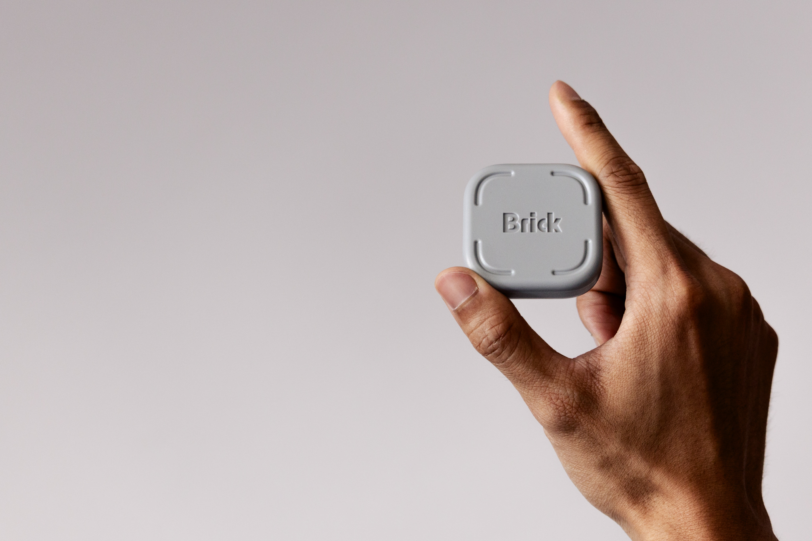
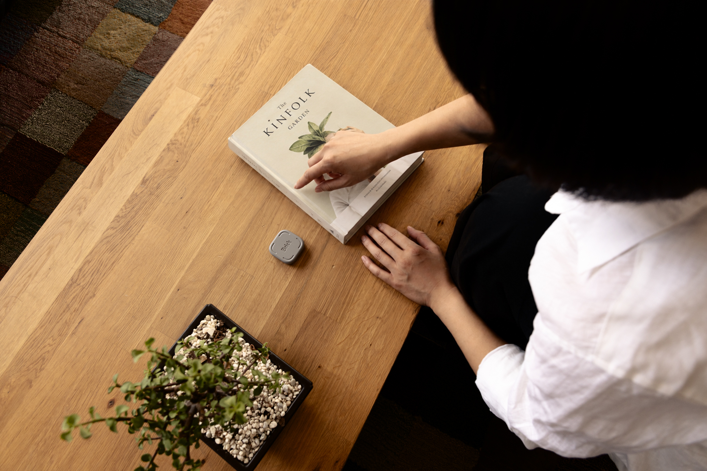

Brick / Product & lifestyle photography
Brick
About the project
Product and lifestyle photography for Brick, from everyday moments at home and at work to time on the climbing wall.






Product and lifestyle photography for Brick, from everyday moments at home and at work to time on the climbing wall.




